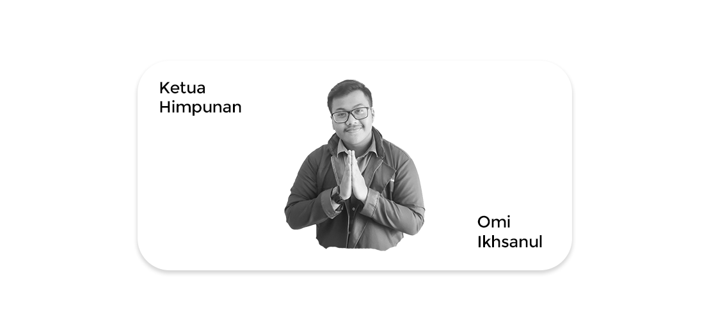

Kajian Pemindahan Ibu Kota
Kajian Strategis
.jpg)
After Movie The Greatest Loka
Kekeluargaan
.jpg)
Citizens: Youth!
Makna
“Bersama Merangkai Asa Wujudkan
KITA (Berkiprah Nyata)”
Mewujudkan wadah yang konstruktif dengan suasana harmonis dan semangat kekeluargaan
Mengembangkan sistem manajemen organisasi yang terintegrasi
Eksplorasi karya yang berdampak dengan semangat pergerakan melalui
partisipasi dan kolaborasi
Kajian Pemindahan Ibu Kota
Kajian Strategis
After Movie The Greatest Loka
Kekeluargaan
Citizens: Youth!
Makna

Revitalisasi Sekre - Planostore
Pengadaan Jahim - The Planner's Book
Bersama Kongres - Jembatan Opini Senator
Ngobrol Asyik dengan Senator -
Ngobrol dengan TPB
Advokasi dan Informasi Kebutuhan Dasar
Seminar KP, TA dan Beasiswa - Bank Materi
Syukuran Wisuda - Pesta Akhir Kepengurusan
Pemikat - Kejora
Karita "The Planners" - Ruang Kreasi
Jika Aku Menjadi Perencana - Software Course
Wanadata Pangripta - Saluur
Website HMP - Citizens

MPAB - LKO & NGT
Staffing BP - Staffing Magang
HMP Transcript - Pangripta Satya Lencana

Maroon Day - Prodi Kita
Visitasi -
Selingkar Diskusi - HMPTalks
KoAr HMP
URBAN MOTION 3.0